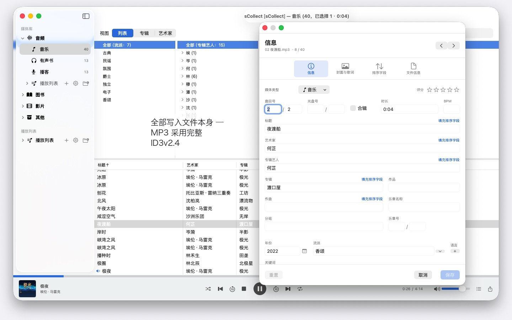
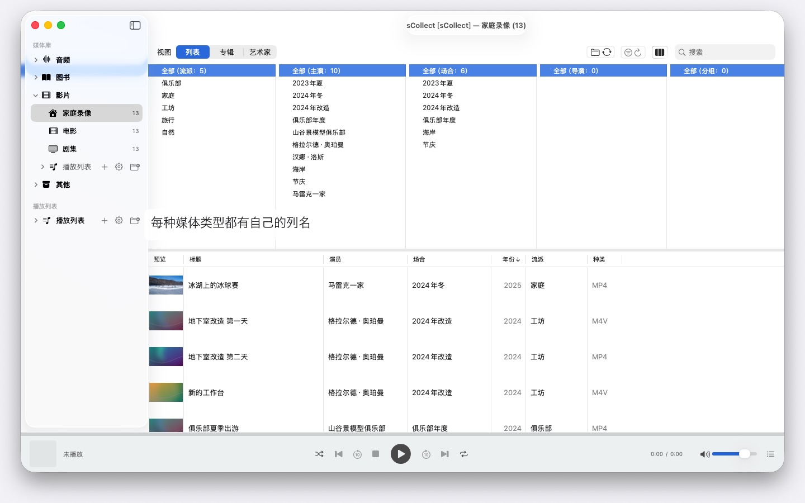

成千上万位艺人、多台 Mac、macOS 14 及以上任一版本：sCollect 整理音乐、电影和图书，并把你填写的信息写进文件本身。无需账户，也无需云端。


sCollect 是一个媒体库，收纳一切可以收藏的东西：音乐、影片、家庭录像、有声书、播客和电子书 —— 也包括根本不是媒体文件的东西，比如硬币或邮票，拍下照片并加以描述。类别叫什么名字，由你自己决定。
与普通编目软件的区别在于：sCollect 会写回文件。你在编辑器里输入的内容，不只进入数据库，还会写进文件本身的元数据。这样一来，即使有一天你不再使用 sCollect，你的工作成果依然留得下来。
整理，但不用你自己动手
导入时，sCollect 会把每个文件放到它该在的位置 —— 按媒体类型、艺术家、专辑或日期，取决于你的设置。每种媒体类型都可以拥有自己的文件夹，也可以放在另一块硬盘上：影片放在大容量外置硬盘上，音乐留在快速的内置硬盘上。
如果你更愿意让收藏留在原处，那就改为链接它们。已链接的文件永远不会被改动。
为照片和视频拍摄而设
如果你拍照或摄像，可以让某个媒体类型按日期存放：导入时，文件会进入按年和月划分的文件夹，文件名带上拍摄时间，直接从文件本身读取 —— 对于视频，如果相机没有记录时区，会给出提示。IMG_ 这类相机前缀可按需从标题中移除，并补充 ISO 日期，列表和磁盘上的排序也保持一致。
真正写进文件的元数据
一个编辑器用于单个项目，另一个用于一次处理许多项目。两者都写入文件本身所带的格式 —— MP3 用 ID3v2.4，MP4 和 M4A 用它们的标签结构，FLAC 和 OGG 用 Vorbis 注释，AIFF 和 WAV 用其文本块，DSD 录音用 DSF，图片用 EXIF、IPTC 和 XMP。
如果某种格式没有对应的字段，或者文件受复制保护，sCollect 会在旁边放一个附属文件，而不是丢掉这条信息。如果文件与媒体库不一致，编辑器会在你覆盖任何内容之前说明。
让工作变短的几件事
- 跨所有字段的查找/替换
- 在整个类别范围内查找重复项，并对哪一份更好给出可追溯的判断
- 像音乐管理软件那样的列浏览器，每列都可以多选。成千上万位艺人也不必无休止地滚动：按首字母分组，A、AB、ABB——点三下即可到达
- 音频和视频播放，带播放列表和记住的播放位置
找出缺失的文件，而不是四处翻找
一次检查会标记每一个文件已不在的条目，并记住结果。一个专门的视图只显示这些条目，并勾掉你已经重新链接好的。
多台电脑，一份收藏
一个媒体库可以注册副本。你在主库上所做的更改，会随后传到每一个可访问的副本，文件和标签都包括在内。如果某个副本当前离线，更改会先留着，等它回来时补上。
每台 Mac 运行哪个版本的 macOS 都无所谓：装有 macOS 14 的 Mac 和装有 macOS 26 的 Mac 读取的是同一份收藏，系统更新也不会转换它。不过，副本并不是备份。
导入与导出
已有的收藏可以通过 iTunes-XML 导入，连同评分和播放列表。导出则用 sCollect-XML —— 无损，适合迁移和备份 —— 或者导出为 Apple Music 的播放列表，或 iTunes-XML。
在你的 Mac 上，也仅在那里
没有账户，没有云，没有分析，没有广告。sCollect 只使用你交给它的文件夹。
因此，sCollect 也不导入 CD，不从互联网获取曲目信息 —— 这两件事 Apple Music 都能做。在 Apple Music 中将 CD 导入为 AAC、Apple Lossless 或 MP3，文件就会带着曲目信息进入 sCollect。这样，你收藏什么、如何整理，没有任何服务会知道。
提供 24 种可自由选择的语言，每一种都配有完整的帮助文档。
支持的语言：简体中文、繁体中文、英语、德语、法语、西班牙语、意大利语、葡萄牙语（巴西、葡萄牙）、荷兰语、瑞典语、挪威语、芬兰语、波兰语、捷克语、克罗地亚语、匈牙利语、罗马尼亚语、土耳其语、俄语、乌克兰语、波斯语、泰语、日语、韩语。
- 需要 macOS 14 或更高版本
- 支持 24 种语言
- 技术支持： SwiftAppsBavaria@gmx.net
更多 App
sName2Date
把文件名中的日期作为拍摄日期写入照片、视频和录音——让 IMG_20240115_103000.jpg 这样的文件在任何照片管理工具中都能正确排序。图像和视频数据保持不变；PDF 和其他没有拍摄日期的文件会设置文件日期，也可按需把名称改为 ISO 格式。一次处理整个文件夹树，每次操作都可以用 ⌘Z 撤销。
sName2Date Lite
每次处理一个文件的版本：把文件名中的日期作为拍摄日期写入照片、视频或录音，手动设置日期，把名称改为 ISO 格式，并可用 ⌘Z 撤销全部操作——功能与 sName2Date 相同，只是不能处理整个文件夹。
sCollectPlay
媒体库的播放器：播放直接来自文件夹、来自 iTunes XML 或 sCollect 媒体库的音乐、电影、有声书和播客——文件的标签不会有任何改动。支持播放列表、音轨和字幕轨道，播放电影时可慢动作播放和逐帧步进。macOS 本身无法播放的格式，例如 MKV、AVI 或 DSD，会交给外部播放器。
sCollectPlay Lite
sCollectPlay 的精简版：直接打开文件夹、iTunes XML 或 sCollect 媒体库，播放其中的音乐、电影、有声书和播客——支持播放列表、音轨和字幕轨道、慢动作播放和逐帧步进。每次会话只能使用一个来源；分栏浏览器、自定义播放列表和最近使用的来源仅限完整版。
sBikeBridge
分析骑行记录，无需上传到任何平台：读取任何以此格式记录的码表所生成的 FIT 文件，以及 GPX 和 TCX。骑行记录保存在 Mac 上的独立资料库中——包含地图、功率和心率、照片和备注；导入时会识别重复项。按年或按月的统计数据，以及按距离、爬升高度和时长的筛选，让骑行记录便于比较。地图也可按需离线使用。